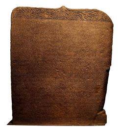

Sumber Sejarah Kerajaan Mataram Kuno

Kerajaan Mataram Hindu, berlokasi di pedalaman Jawa tengah, di sekitar daerah yang banyak dialiri sungai. Letak ibu kota kerajaan secara tepat belum dapat dipastikan, ada yang menyebut Medang di Poh Pitu, Ri Medang ri Bhumi Mataram. Daerah yang dimaksud belum jelas, kemungkinan besar di daerah Kedu sampai sekitar Prambanan (berdasarkan letak prasasti yang ditemukan).
Masyarakat Mataram Kuno terbilang maju dalam hal budaya, terbukti dengan banyaknya bangunan candi yang dibuat, Termasuk dua Candi besar yang sangat termahsyur. Tidak lain adalah Candi Borobudur yang dibuat pada masa pemerintahan Samaratungga dari dinasti Syailendra yang bercorak Budha. Dan yang kedua adalah Candi Prambanan yang dibangun pada masa pemerintahan Rakai Pikatan dan selesai pada masa pemerintahan Daksa dari Dinasti Sanjaya yang bercorak Hindu.
Penduduk Medang sejak periode Bhumi Mataram pada umumnya bekerja sebagai petani. Kerajaan Medang memang terkenal sebagai negara agraris, sedangkan saingannya, yaitu kerajaan Sriwijaya merupakan negara maritim. Melihat dari letak wilayah kerajaan yang berada di dekat aliran sungai, dan informasi dari prasasti canggal yang menyebutkan jawa kaya akan padinya, kemungkinan besar mata pencaharian penduduknya sebagian besar dari bercocok tanam.
Agama resmi Kerajaan Medang pada masa pemerintahan Sanjaya adalah Hindu aliran Siwa. Ketika wangsa Syailendra berkuasa, agama resmi kerajaan berganti menjadi Budha aliran Mahayana. Pemerintahan kedua dinasti yang berbeda agama, dapat berjalan dengan rukun. Dibawah pemerintahan Dinasti Syailendra toleransi agama masih terjaga. Terbukti dengan Candi-candi yang berada di Jawa Tengah bagian utara bercorak Hindu, Sedangkan bagian selatan bercorak Budha. Hal ini menjadi bukti bahwa kerukunan hidup umat beragama di Indonesia sudah ada sejak dulu. Kemudian pada saat Rakai Pikatan dari Wangsa Sanjaya berkuasa , agama Hindu dan Budha tetap hidup berdampingan dengan penuh toleransi.
Dua prasasti peninggalan Mataram Hindu sama-sama menyebutkan nama Sanjaya
yang merupakan anak dari Sanna, Raja ketiga Galuh, yang beristri Sannaha. Sannaha
adalah cucu ratu Shima, Penguasa Kerajaan Kaling. Adapun kedua Prasasti dari Kerajaan
Mataram Hindu adalah Prasasti Canggal dan Prasasti Mantyasih.
1. Prasasti Canggal

Prasasti Canggal yang ditandai dengan Candrasengkala Cruti Indra Rasa = 654 C =
732 M. ditemukan di kompleks Candi Gunung Wukir, Desa Kadiluwih, Kecamatan
Salam, Kabupaten Magelang, Jawa Tengah. Prasasti ini berbahasa sanskerta dan
hurufnya Pallawa isinya adalah asal-usul Sanjaya, Menurut prasasti ini Jawa awalnya
dipimpin oleh Raja Sanna, ia memerintah dengan sangat adil, setelah ia wafat,
digantikan oleh putranya yang bernama Sanjaya. Diceritakan Sanjaya melakukan
pembangunan lingga di bukit Stirangga, Desa Kuntjarakuntja di prasasti ini. Selain itu
dijelaskan pula keadaan pulau jawa yang sangat makmur, kaya akan padi dan emas.
Keadaan kerajaan digambarkan sangat tentram.
Daftar Raja Raja Mataram (berdasarkan Prasasti Canggal) :
1. Sanjaya, pendiri Kerajaan Medang
2. Rakai Panangkaran, awal berkuasanya Wangsa Syailendra
3. Rakai Panunggalan alias Dharanindra
4. Rakai Warak alias Samaragrawira
5. Rakai Garung alias Samaratungga
6. Rakai Pikatan suami Pramodawardhani, awal kebangkitan Wangsa Sanjaya
7. Rakai Kayuwangi alias Dyah Lokapala
8. Rakai Watuhumalang
9. Rakai Watukura Dyah Balitung
10. Mpu Daksa
11. Rakai Layang Dyah Tulodong
12. Rakai Sumba Dyah Wawa
13. Mpu Sindok, awal periode Jawa Timur (Sri Isyana Dharmottungga)mendirikan dinasti Isyana
14. Sri Lokapala suami Sri Isanatunggawijaya
15. Makuthawangsawardhana
16. Dharmawangsa Teguh,
Kerajaan Medang/Mataram berakhir akibat terjadinya
Pralaya. Menantu Dharmawangsa bernama Airlangga berhasil meloloskan diri
dan mendirikan kerajaan Kahuripan.
2. Prasasti Mantyasih
Prasasti Mantyasih atau Prasasti Balitung berangka tahun 829 Çaka atau
bertepatan dengan 11 April 907 M, ditulis dengan menggunakan aksara dan berbahasa
Jawa Kuno. Prasasti ini berasal dari Wangsa Sanjaya. Prasasti Mantyasih ditemukan di
Kampung Meteseh Kidul, Desa Meteseh, Kecamatan Magelang Tengah, Kota
Magelang, Provinsi Jawa Tengah. Isinya adalah daftar silsilah raja-raja Mataram
sebelum Raja Balitung. Prasasti ini dibuat sebagai upaya melegitimasi Balitung sebagai
pewaris tahta yang sah, sehingga menyebutkan raja-raja sebelumnya yang berdaulat
penuh atas wilayah kerajaan Mataram Kuno. Nama raja yang ditulis antara lain :
1. Raja Sanjaya,
2. Rakai Panangkaran,
3. Rakai Panunggalan,
4. Rakai Warak,
5. Rakai Garung,
6. Rakai Pikatan,
7. Rakai Kayuwangi,
8. Ratu Watuhumalang,
9. Rakai Watukura Dyah Balitung.
Setelah Sanjaya wafat, penggantinya adalah Rakai Panangkaran, kuat dugaan
bahwa semenjak masa kekuasaan Rakai Panangkaran , Dinasti Syailendra (dari Kerajaan
Sriwijaya) mulai mengasai Mataram dan menjadikan raja-raja dari Dinasti Sanjaya
sebagai bawahan. Hal ini diperkuat dengan bukti bahwa Rakai Panangkaran, kerap
membangun candi bercorak Budha pada masa pemerintahannya seperti Candi Sewu,
Plaosan, dan Kalasan. Pembangunan Candi Kalasan sendiri merupakan perintah dari
Maharaja Wisnu, Raja dari Dinasti Syailendra. Setelah Rakai Panangkaran, Dinasti
Syailendra masih berkuasa atas Mataram Kuno selama kurang lebih satu abad.
Beradasarkan Prasasti Kalasan: Rakai Panangkaran mendapat perintah dari Raja
Wisnu untuk mendirikan bangunan suci bagi Dewi Tarra (Berupa Candi Kalasan yang
bercorak Budha) dan menghadiahkan desa kalasan bagi Sanggha (Budha)
Sampai pada akhirnya terjadi pernikahan antara antara Rakai Pikatan (Dinasti
Sanjaya) dengan Pramodhawardhani pernikahan tersebut ditentang oleh Balaputradewa
adik Pramodhawardhani (Dinasti Syailendra). Balaputradewa sendiri kalah dan
menyingkir ke Sriwijaya, tempat nenek moyangnya. Kelak dibawah pimpinan
Balaputradewa, Sriwijaya mencapai jaman keemasaan.
Dengan demikian berakhirlah kekuasaan Dinasti Syailendra atas Mataram Kuno.
Dibawah Pemerintahan Rakai Pikatan wilayah kekuasaan Mataram Kuno meluas sampai
ke Jawa Timur. Adapun setelah Rakai Pikatan wafat, Raja yang menggantikannya secara
berturut-turut adalah Rakai Kayuwangi, Ratu Watuhumalang, Rakai Watukura Dyah
Balitung, Daksa (910 –919) Tulodong (919 – 921) dan Wawa (921 – 927). Wawa adalah
raja terakhir Dinasti Sanjaya.
Konflik Tahta Periode Jawa Tengah
Pada masa pemerintahan Rakai Kayuwangi putra Rakai Pikatan (sekitar
856 – 880–an), ditemukan beberapa prasasti atas nama raja-raja lain, yaitu Maharaja
Rakai Gurunwangi dan Maharaja Rakai Limus Dyah Dewendra. Hal ini menunjukkan
kalau pada saat itu Rakai Kayuwangi bukanlah satu-satunya maharaja di Pulau Jawa.
Sedangkan menurut prasasti Mantyasih, raja sesudah Rakai Kayuwangi adalah Rakai
Watuhumalang.
Dyah Balitung yang diduga merupakan menantu Rakai Watuhumalang berhasil
mempersatukan kembali kekuasaan seluruh Jawa, bahkan sampai Bali. Mungkin karena
kepahlawanannya itu, ia dapat mewarisi takhta mertuanya. Pemerintahan Balitung
diperkirakan berakhir karena terjadinya kudeta oleh Mpu Daksa yang mengaku sebagai
keturunan asli Sanjaya. Ia sendiri kemudian digantikan oleh menantunya, bernama Dyah
Tulodhong. Tidak diketahui dengan pasti apakah proses suksesi ini berjalan damai
ataukah melalui kudeta pula. Tulodhong akhirnya tersingkir oleh pemberontakan Dyah
Wawa yang sebelumnya menjabat sebagai pegawai pengadilan.
Sesudah Dyah Wawa wafat digantikan menantunya yaitu Mpu Sindok
selanjutnya memindahkan kerajaannya ke Jawa Timur dan mendirikan dinasti baru yaitu
Dinasti Isyana pada tahun 928 M. Konon pemindahan ini dikarenakan letusan Gunung
Merapi, gempa vulkanik, dan hujanmaterial vulkanik yangmembuat kacau banyak daerah
di Jawa Tengah.
Menurut teori van Bammelen, perpindahan istana Medang dari Jawa
Tengah menuju Jawa Timur disebabkan oleh letusan Gunung Merapi yang sangat dahsyat.
Konon sebagian puncak Merapi hancur. Kemudian lapisan tanah begeser ke arah barat
daya sehingga terjadi lipatan, yang antara lain, membentuk Gunung Gendol dan
lempengan Pegunungan Menoreh. Letusan tersebut disertai gempa bumi dan hujan
material vulkanik berupa abu dan batu. Di Jawa timur ini Mpu Sindok melanjutkan
Kerajaan Medang Kamulan.
Istana Medang yang diperkirakan kembali berada di Bhumi Mataram hancur.
Tidak diketahui dengan pasti apakah Dyah Wawa tewas dalam bencana alam tersebut
ataukah sudah meninggal sebelum peristiwa itu terjadi, karena raja selanjutnya yang
bertakhta di Jawa Timur bernama Mpu Sindok yang menjabat sebagai Rakryan Mapatih
Hino mendirikan istana baru di daerah Tamwlang. Prasasti tertuanya berangka tahun 929.
Dinasti yang berkuasa di Medang periode Jawa Timur bukan lagi Sanjayawangsa,
melainkan sebuah keluarga baru bernama Isanawangsa, yang merujuk pada gelar
abhiseka Mpu Sindok yaitu Sri Isana Wikramadharmottungga.
Permusuhan dengan Sriwijaya
Kekuasaan Wangsa Sailendra meliputi Kerajaan Medang dan juga kerajaan
Sriwijaya di pulau Sumatra. Hal ini ditandai dengan ditemukannya Prasasti Ligor tahun
775 yang menyebut nama Maharaja Wisnu dari Wangsa Sailendra sebagai penguasa
Sriwijaya.
Hubungan senasib antara Jawa dan Sumatra berubah menjadi permusuhan ketika
Wangsa Sanjaya bangkit kembali memerintah Medang. Menurut teori de Casparis, sekitar
tahun 850–an, Rakai Pikatan berhasil menyingkirkan seorang anggota Wangsa Syailendra
bernama Balaputradewa putra Samaragrawira.
Balaputradewa kemudian menjadi raja Sriwijaya di mana ia tetap menyimpan dendam
terhadap Rakai Pikatan. Perselisihan antara kedua raja ini berkembang menjadi permusuhan
turun-temurun pada generasi selanjutnya. Selain itu, Medang dan Sriwijaya juga bersaing
untuk menguasai lalu lintas perdagangan di Asia Tenggara.
Rasa permusuhan Wangsa Sailendra terhadap Jawa terus berlanjut bahkan ketika
Wangsa Isana berkuasa. Sewaktu Mpu Sindok memulai periode Jawa Timur, pasukan
Sriwijaya datang menyerangnya. Pertempuran terjadi di daerah Anjukladang (sekarang
Nganjuk, Jawa Timur) yang dimenangkan oleh pihak Mpu Sindok.
Peristiwa Mahapralaya
Mahapralaya adalah peristiwa hancurnya istana Medang di Jawa Timur berdasarkan
berita dalam prasasti Pucangan. Tahun terjadinya peristiwa tersebut tidak dapat dibaca
dengan jelas sehingga muncul dua versi pendapat. Sebagian sejarawan menyebut Kerajaan
Medang runtuh pada tahun 1006, sedangkan yang lainnya menyebut tahun 1016.
Raja terakhir Medang adalah Dharmawangsa Teguh, cicit Mpu Sindok. Kronik
Cina dari Dinasti Song mencatat telah beberapa kali Dharmawangsa mengirim pasukan
untuk menggempur ibu kota Sriwijaya sejak ia naik takhta tahun 991. Permusuhan antara
Jawa dan Sumatra semakin memanas saat itu.
Pada tahun 1006 Dharmawangsa lengah. Ketika ia mengadakan pesta perkawinan
putrinya, istana Medang di Wwatan diserbu oleh Aji Wurawari dari Lwaram yang
diperkirakan sebagai sekutu Kerajaan Sriwijaya. Dalam peristiwa tersebut, Dharmawangsa
tewas.
Tiga tahun kemudian, seorang pangeran berdarah campuran Jawa–Bali yang lolos
dari Mahapralaya tampil membangun kerajaan baru sebagai kelanjutan Kerajaan Medang.
Pangeran itu bernama Airlangga yang mengaku bahwa ibunya adalah keturunan Mpu
Sindok. Kerajaan yang ia dirikan kemudian lazim disebut dengan nama Kerajaan
Kahuripan.